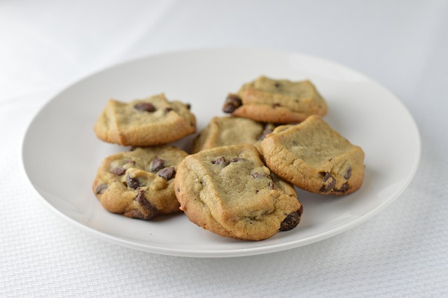

Chocolate Chip Cookies

Description
Here is my stepmother's delicious chocolate chip cookie recipe! They taste best
with big chocolate chips.
Ingredients
- 1 package (12 oz) chunky chocolate chips
- 2 1/4 cups flour
- 1 teaspoon baking soda
- 1 teaspoon salt
- 1/2 cup shortening
- 1/2 cup butter (softened)
- 3/4 cup sugar
- 3/4 cup light brown sugar
- 1 teaspoon vanilla
- 2 eggs
Steps
- With electric mixer, cream butter and shortening. Add vanilla and sugars. Cream well. Add eggs. Mix.
- Add dry ingredients until thoroughly mixed. Fold in chips. Refrigerate dough about 15 minutes.
- Drop by teaspoons onto greased cookie sheet.
- Bake at 375 degrees for 8-10 minutes. If you want, bake them for 7 minutes on lower rack
and move them to upper rack for 2 minutes.
Home